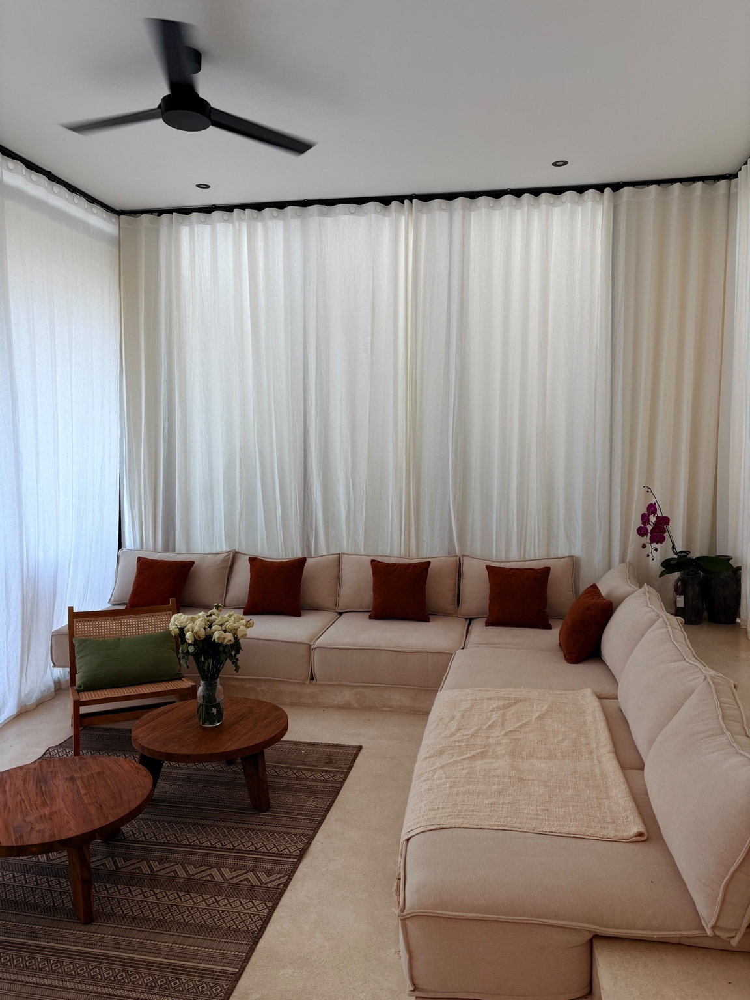
Residential
Sofas · Lounge Chairs · Living Spaces
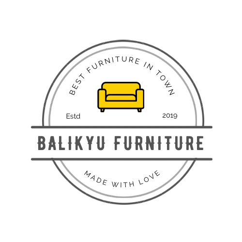
WhatsApp Us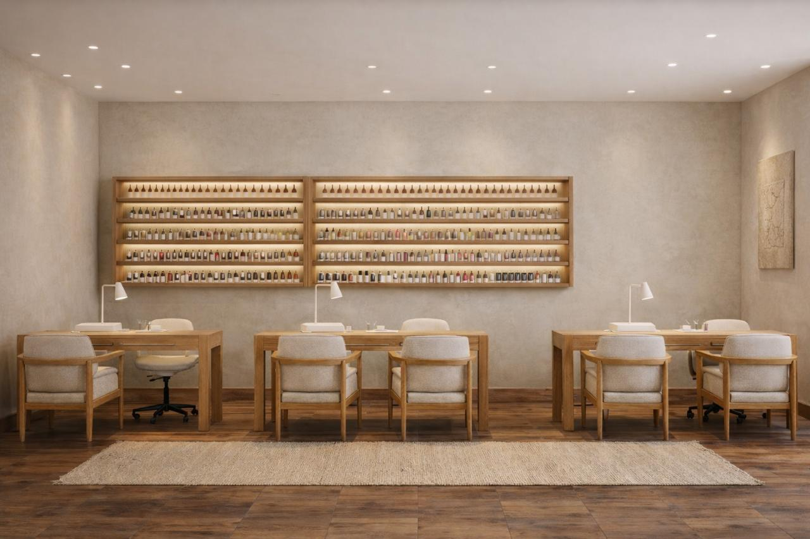
Bespoke furniture for residential and commercial spaces, thoughtfully crafted with quality, comfort, and timeless design.
EST. 2019 · MADE WITH LOVEAt Balikyu Furniture, we create custom furniture for residential and commercial spaces. From individual pieces to complete space solutions, our furniture is thoughtfully made with attention to quality, functionality, and comfort.
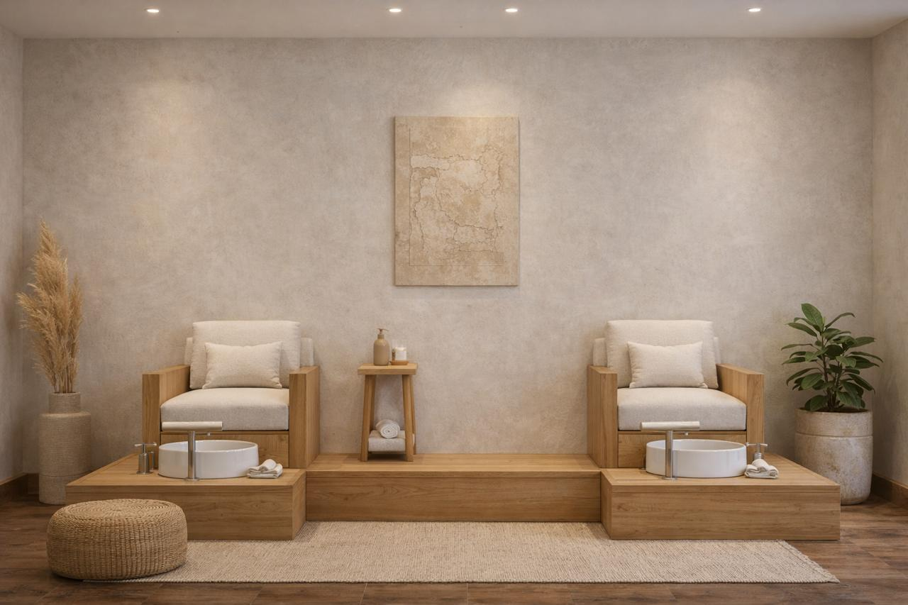

Sofas · Lounge Chairs · Living Spaces
Restaurants · Salons · Offices · Hospitality
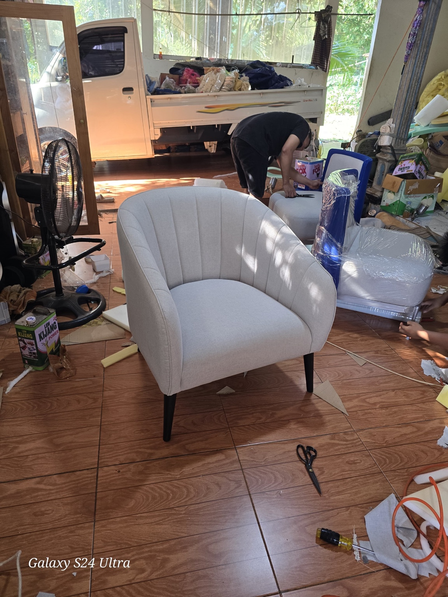
Made-to-measure furniture tailored to your project.
Custom tables · Chairs · Cabinetry
Custom modular sofa
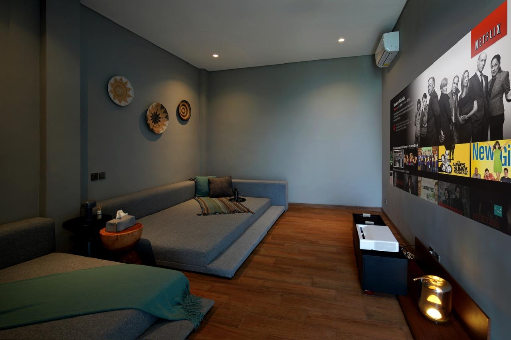
Custom lounge seating
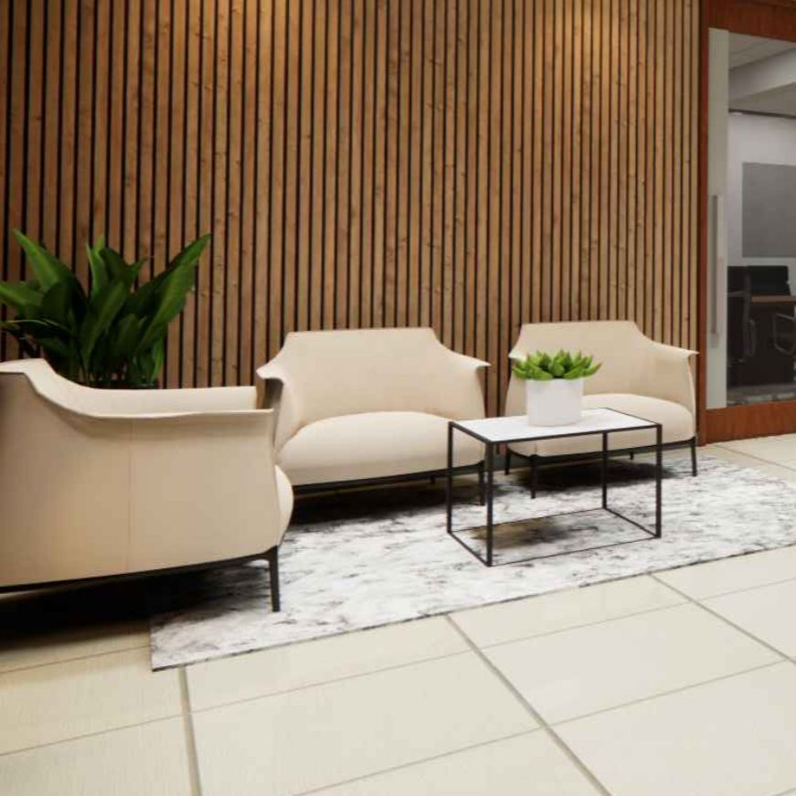
Custom armchairs & seating
A closer look at custom pieces and work in progress from our workshop.
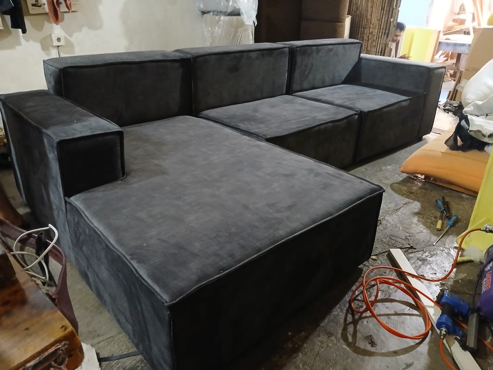
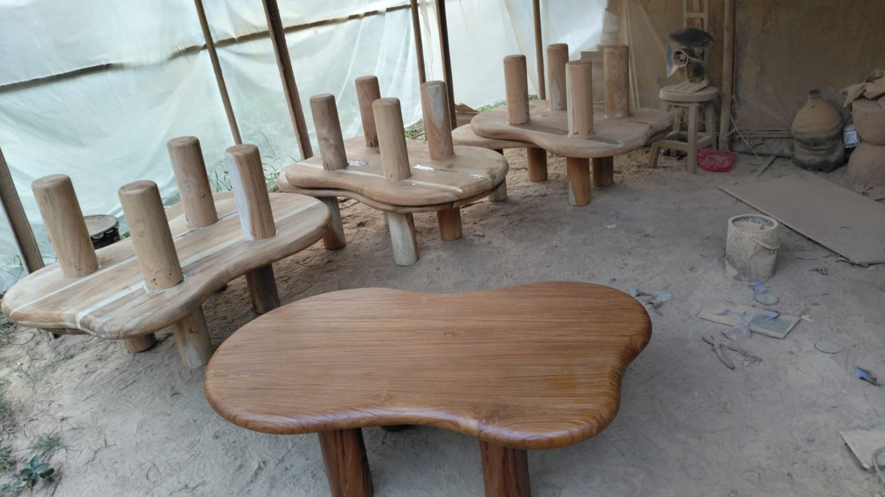
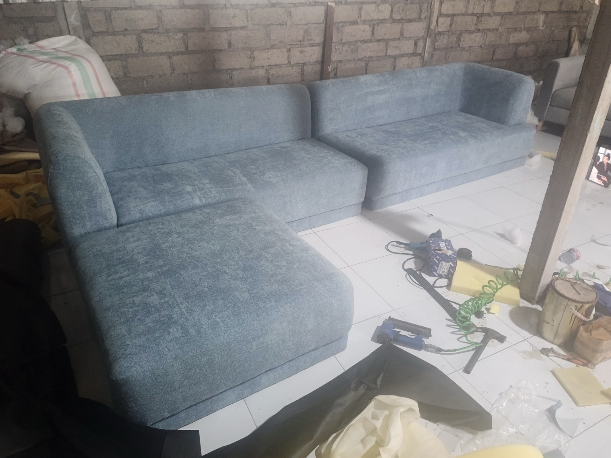
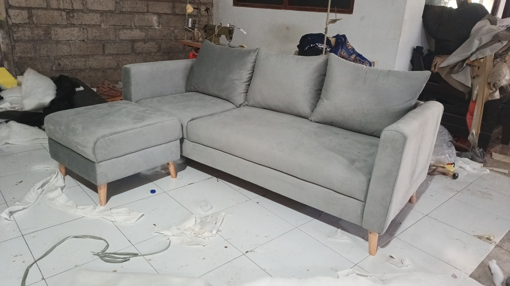
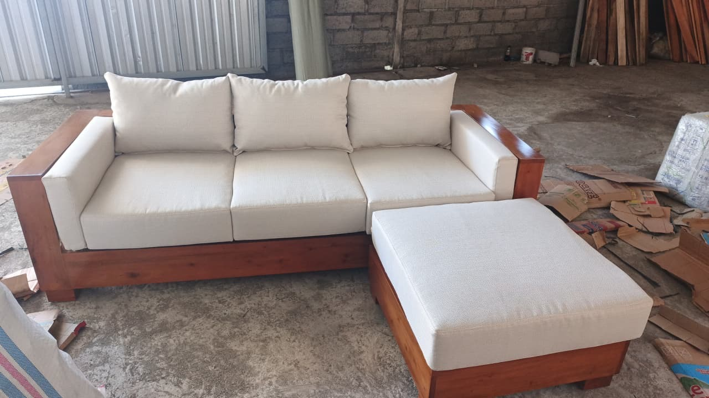
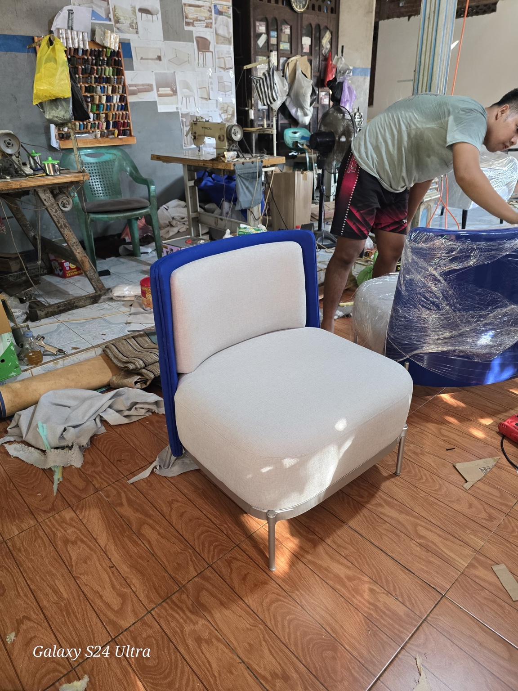
Every piece begins with an idea and is brought to life through careful material selection, construction, upholstery, and finishing.
Send us your reference, dimensions, preferred material, or simply tell us about your space. We'll help turn it into furniture made for you.